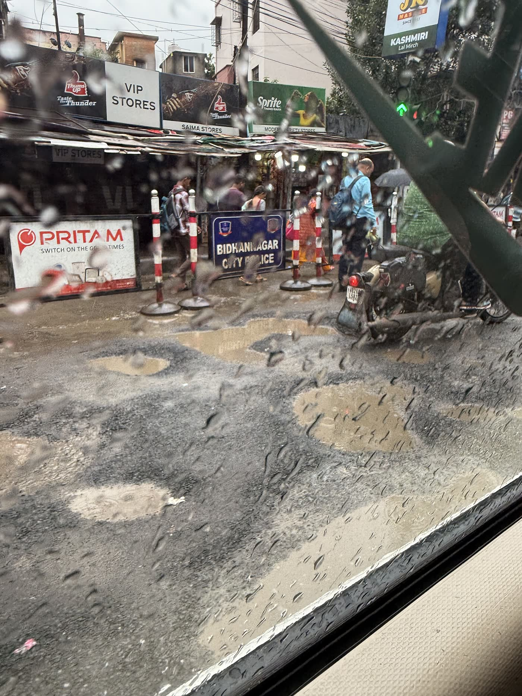
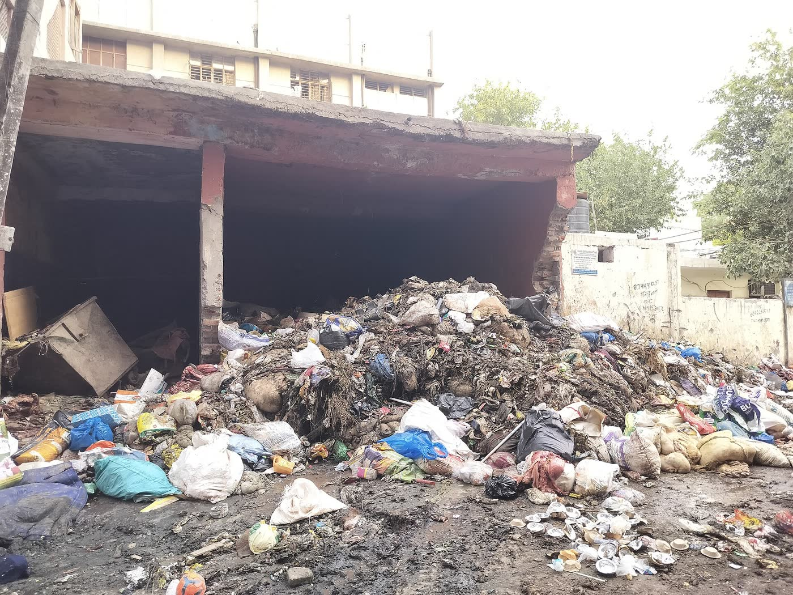
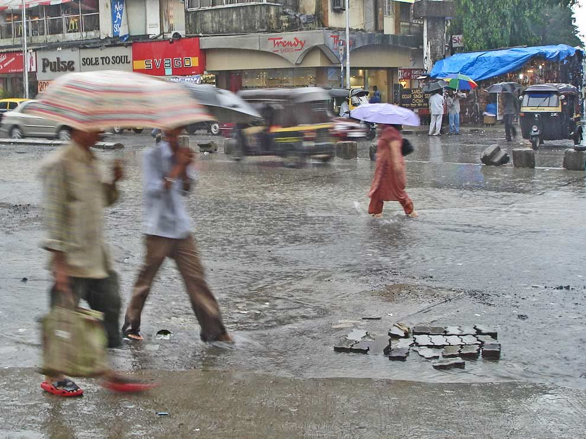
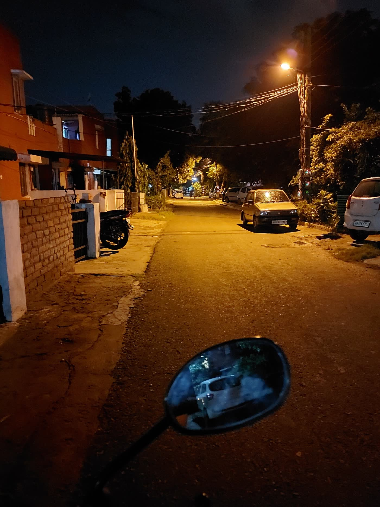
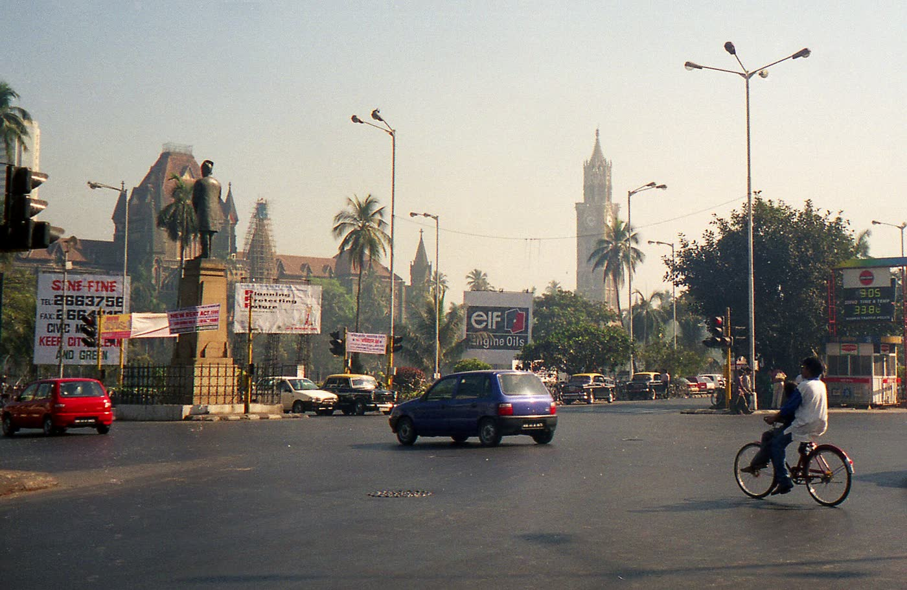
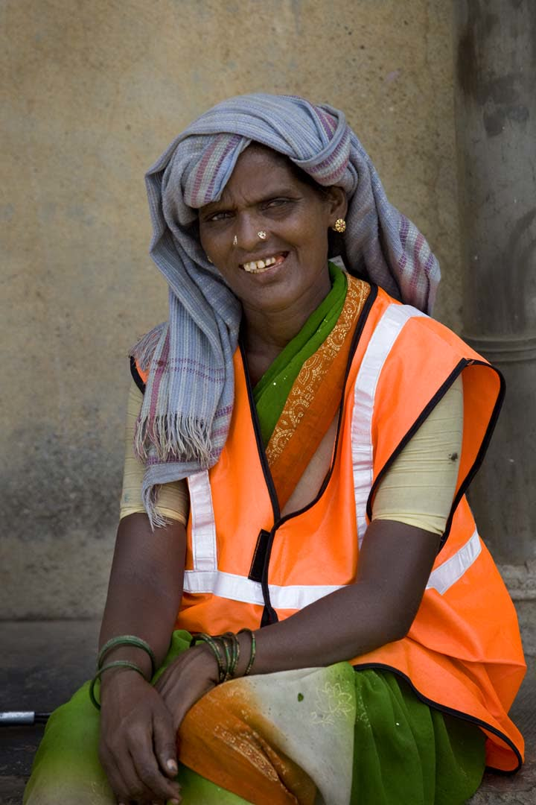
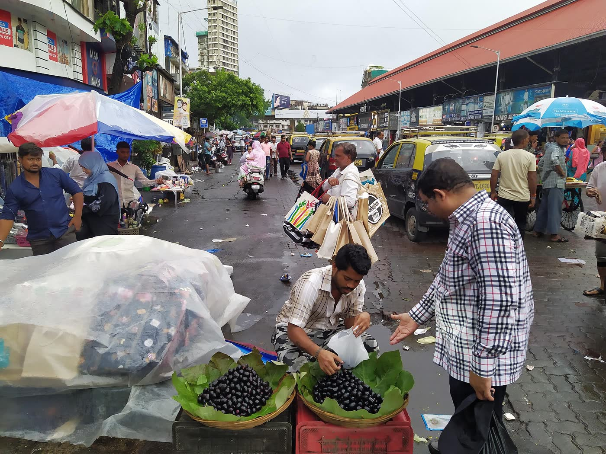

Apps nobody installs
Most complaint apps need a smartphone, a login, and patience. The person who walks past the broken drain every day often has none of the three.
Civic helpline · no app needed
Call, describe the problem in your own language, and we send it to the one officer who looks after your area. Then we keep you posted on WhatsApp until it's actually fixed.
or dial +91 79 6921 5737The problem




Most complaint apps need a smartphone, a login, and patience. The person who walks past the broken drain every day often has none of the three.
Complaints land in a general queue. The engineer who could fix it in an afternoon never hears about it.
Tickets get marked resolved without anyone checking. The citizen is never asked.
Every monsoon, the same streets. The same complaints. Usually sent to the same wrong address.
How it works
Press "Make a complaint" or dial the number. Sahayak, our voice assistant, asks what's wrong and where, in Hindi, English, Marathi or your language. About two minutes.
You get a ticket number and a WhatsApp message. Tap it, send a photo and drop a location pin, so the officer knows exactly which pole or pothole.
The photo is checked to confirm the type of problem and how serious it is. A live wire jumps the queue; a faded road marking waits its turn.
Ward + problem type decides who owns it. The officer gets an email or WhatsApp with three buttons: Resolved, In progress, Not my area. No app, no password.
When the officer marks it done, we ask you: "Is it really fixed? Send a photo." Say no, and it goes back to them, and up the chain if it's ignored.
Demo
Nagrik Setu
00:04
To: JE Electrical, K/West ward
New complaint in your area · NS-1042
Tap the phone to pause.
Features
Hindi, English, Marathi, Hinglish and more. Switch mid-sentence; Sahayak switches with you.
A ₹1,000 keypad phone is enough to register a complaint. No app, no account.
Each photo is read to confirm the category and severity, so urgent problems rise to the top.
Location pin → ward → department → one named officer. If we don't know the officer yet, it goes to the city or district office instead.
When an officer taps "Not my area, it's X", the ticket moves to X and the directory remembers, so the next complaint goes right first time.
No reply in time? The complaint moves up to the officer's senior, automatically.
Not the officer, not us. A complaint is only closed when the person who reported it says so.

Every ticket (without personal details) shows on a public map: open, in progress, fixed.
See the map →Public map
Sample tickets for demonstration. Live tickets appear here once the pilot starts.
For officers
Complaints for your ward arrive in the inbox or WhatsApp you already use, with a photo and an exact pin. Tap once to update the citizen. Wrong person? Tell us who, and we'll fix the record.

the people who fix the city
Linemen, sanitation workers, ward engineers. Most of them want to fix things. Nagrik Setu gets them a clear complaint, a photo and an exact location, instead of a forwarded forward.
Questions
No. We are an independent citizen service. We forward your complaint to the government officer responsible for it and track it until it's closed.
It's free for citizens. You only pay your normal call charges. We will never ask you for money, an OTP, or bank details.
Yes. The complaint is registered and sent to the officer from the call alone. You can also give a family member's WhatsApp number for photos and updates.
Complaints from anywhere in India are accepted. Where we know the exact ward officer, it goes to them; otherwise to the city or district office. We're starting ward-level coverage with Mumbai.
It's used only to send you updates about your complaint. It is never shown on the public map or shared with anyone except the officer handling it.
For fire, accidents, a live wire on the road, or any danger to life, call 112 first. You can report it to us afterwards so the department also knows.

It takes about two minutes. Somebody responsible will hear about it today.
Make a complaint +91 79 6921 5737